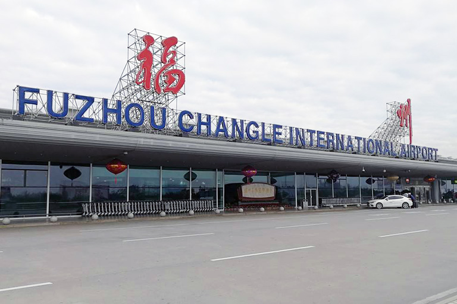

Travel Tips for Fuzhou
Fuzhou Flight
Fuzhou has one frequently used airport. It is an international airport namely Changle International Airport (IATA: FOC). The airport operates about 117 flight routes, connecting international cities
Changle International Airport
Address: Zhanggang Street, Changle District, Fuzhou, Fujian, China (福州市长乐区漳港街道金湖梅线，长乐国际机场)